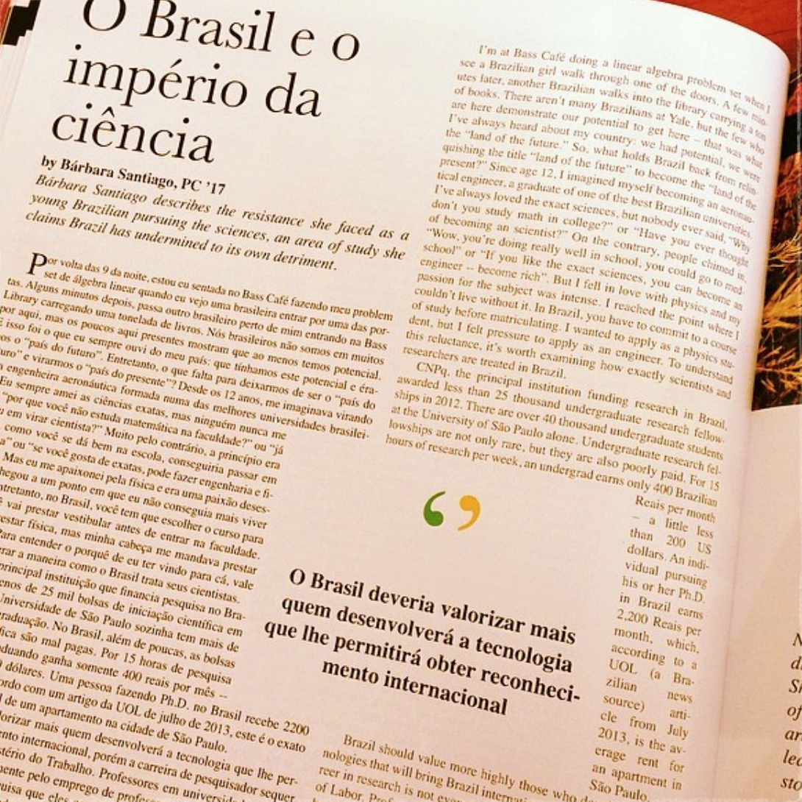
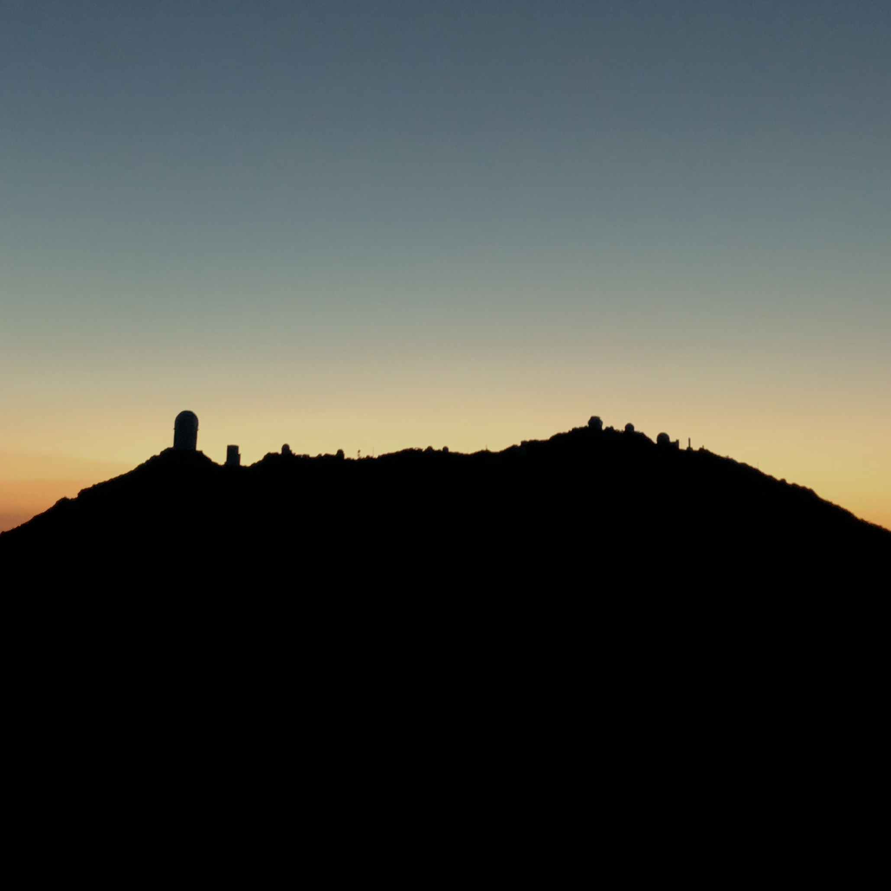
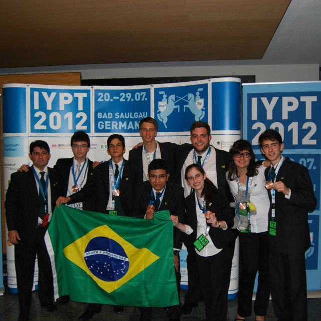
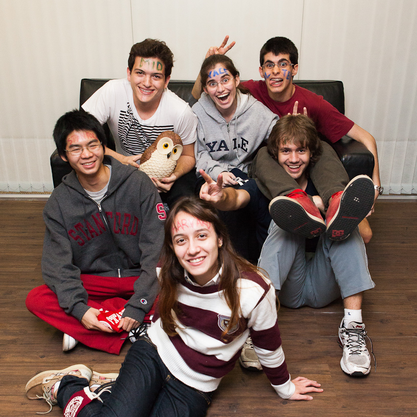

Articles that I wrote
Throughout the years, I wrote a number of articles for various websites and literary magazines about being a woman in STEM, Brazilian politics, science and studying abroad. You can read some of them below.WOMEN IN ASTRONOMY YALE SCIENTIFIC ACCENT (FALL 2016) ACCENT (SPRING 2016) ACCENT (FALL 2014) ACCENT (SPRING 2014) ESTUDAR FORA


Research Work
From undergrad to grad school, research has been at the core of my career path. Below, you can find some articles other people wrote about my research and life as a physicist.NA PRÁTICA (2020) ESTUDAR FORA (2020) ESTUDAR FORA (2018) NA PRÁTICA (2017) ESTUDAR FORA (2017) ESTUDAR FORA (2016)

Scientific Competitions
In high school, I participated in more scientific tournaments and Olympiads than I can count, scoring about a dozen medals and representating Brazil twice at the International Young Physicists' Tournament. Below, you can find some of the press coverage I got for it.A TRIBUNA TV BAND LITORAL ADMINISTRADORES BICO (2012-2) BICO (2012-1) BICO (2011) ESTUDAR FORA AT REVISTA
College, Grad School and Scholarships
I got some press coverage in the past for scholarships I got, studying abroad, as a Brazilian student in the US, and what that entailed. You can check out some of those articles below.G1 (2017) YALE DAILY NEWS ESTUDAR FORA (2015-3) ESTUDAR FORA (2015-2) ESTUDAR FORA (2015-1) G1 (2013)

Crowdfunding Campaign
When I got into college, a few friends of mine and I realized that we couldn't pay for the total cost of going to college abroad. We then started a crowdfunding campaign so we could attend the best universities in the globe and advance science. Our campaign went viral, and my page alone got over 30k Facebook likes and almost R$ 60k (equivalent to ~USD 30k at the time).INFO TV TRIBUNA EXAME A TRIBUNA G1 (2013-2) G1 (2013-1) TV OAB JOVENS PENSADORES O IMPARCIAL ESTUDAR FORA